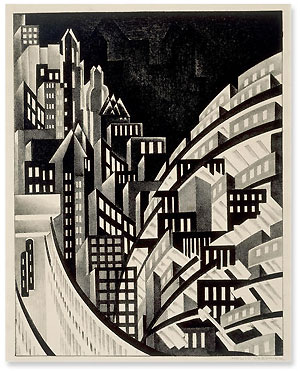

|
The
American Collection: Works on Paper
The American
Collection in the Department of Prints and Drawings ranges from
some of the earliest surviving representations of American subjects
to twentieth-century evocations of the American scene and the most
contemporary forms of artistic expression. The acquisition of material
by artists who came from or gravitated towards the United States
from the late-nineteenth century onwards, has been a principal objective
since the late 1970s. This has been expanded to include artists
working in Canada and Latin America.
Drawings
The earliest
drawings in the collection are a priceless record by the artist
John White (active 1585-1593), of the flora, fauna and native peoples
he observed in the course of expeditions for the colonisation of
Virginia organised by Sir Walter Raleigh between 1585 and 1590.
All the drawings as well as those of non-American subjects were
published in facsimile in 1964.
Chronologically
the next substantial group of drawings of American interest belongs
to the history painter, Benjamin West (1738-1820), who arrived in
England in 1763, becoming the second President of the Royal Academy
in 1792. He was followed to London in 1774 by the Boston portrait
painter, John Singleton Copley (1738-1815), by whom the Department
owns a book of anatomical drawings made in 1756 at the very beginning
of his career. Two other distinguished artists of American origin
who spent the greater part of their careers in Europe, were first
of all J.A.M. Whistler (1834-1903), who is principally represented
by an Amsterdam Nocturne of 1883-84; the only one to remain
outside the Freer Collection in Washington, it formerly belonged
to Whistler's protégé, the British artist W. R. Sickert. Secondly,
there was the fashionable portrait painter John Singer Sargent (1856-1925)
by whom the Museum has fourteen drawings including watercolours
of Venice, Genoa and the Alhambra in Spain, and a pastel of his
friend, the French artist Paul Helleu.
From the early
twentieth century there are vivid examples by Abraham Walkowitz
(1878-1965) whose City Abstraction of 1912 captures the dynamism
of New York, and by the Canadian David Milne (1882-1953), for whom
watercolour was his preferred medium; Milne did some of his best
work in the United States such as Ferris Wheel, Coney Island,
of 1912 and Reflections, Glenmore Hotel (in the Adirondacks)
of 1923, both of which have been acquired by the Department. The
impact of European Surrealist and Expressionist traditions can be
seen in drawings by the French-born artist Louise Bourgeois (b.1911),
and the Swiss émigré Hans Burkhardt (1904-1994), who worked with
Gorky and de Kooning in New York before moving to California in
1937. A clearly identifiable New York School began to emerge from
the 1940s onwards, represented by an abstract watercolour of 1944
by Hans Hofmann (1880-1966) a large sculptural gouache of 1951 by
David Smith (1906-1965), two drawings of 1948-50 by Dorothy Dehner,
Smith's first wife, and a brush drawing of 1957 by Franz Kline (1910-1962).
In Toronto, a group of artists interested in abstraction exhibited
together in the 1950s under the name Painters Eleven, whose
work is represented by Oscar Cahén (1916-1956) and Kazuo Nakamura
(b.1926). The period from the mid-1960s to the present day is represented
with both abstract and figurative work by artists such as Jim Dine,
Sol Lewitt, Lawrence Weiner, Joel Shapiro, Jay Defeo, Edda Renouf,
and Kiki Smith.
Prints
The
Department now has the best collection of American prints from the
late-nineteenth century up to the mid-1960s of any museum outside
the United States. The key factors in the diversity of the material
from this period were the inherent vitality of so much American
subject matter and a belief in the importance of prints as a means
of communication at all levels. Native-born artists and foreigners,
narrative artists and abstractionists alike were captivated by the
drama and geometry of American urban, industrial and agrarian life,
from New York street architecture, to railway goods yards and Mid-Western
grain elevators. During the Depression, printmaking was further
stimulated by the Federally funded Graphic Arts Divisions run from
1935-43 under the Works Progress Administration for the relief of
unemployed artists. Political upheavals in Europe brought a stream
of émigrés with their own skills and stylistic innovations who further
helped to transform the artistic scene in America.
Left:
Louis Lozowick (1892-1973), New York from the El train, around 1925,
lithograph, 292 x 229mm, bequeathed by Mrs Kathleen Gray (1993-7-25-58),
© 2000, The Lozowick Estate
The Department's
collection of prints by modern American artists really began in
1863 with the acquisition of its first set of Whistler's etchings
from the artist. In 1905 the son of the printer T.R. Way, presented
the greater part of Whistler's lithographic output, while Whistler's
fervent admirer, Joseph Pennell (1869-1929), also presented much
of his own considerable graphic oeuvre. One of the Department's
principal benefactors was Campbell Dodgson, the Keeper from 1912-1932,
who in 1926 gave four of Edward Hopper's most important etchings,
including Night on the El Train of 1918 and Evening Wind
of 1921. A cross-section of the work of John Sloan (1871-1951),
whose portfolio of 1905-6, New York City Life, was such an
inspiration to Hopper in its use of plebeian urban narrative, was
presented to the Museum as a single gift from the artist's estate.
The bulk of
the collection, however, has been built up by purchase, supplemented
by some generous gifts, since 1979. The very favourable public response
to an initial exhibition American Prints 1879-1979 held in
1980, convinced us that this should become a major area of acquisition.
Among the wealth of material represented are outstanding groups
of work by George Bellows (1882-1925), one of the most forceful
American artistic personalities at the beginning of the century;
by Hopper's friend, Martin Lewis (1882-1962), who produced haunting
images of New York in the shadows; by the numerous people experimenting
with screen printing during the 1940s when it was in its infancy
as an artistic medium; by the new cosmopolitan body of artists for
whom S.W. Hayter's Atelier 17 was such a magnet in New York
from 1940-1955, when American artists like Jackson Pollock made
contact with Europeans like Miró and Masson; and by artists working
across the United States in the Mid-West and California. American
printmaking from the 1960s is represented by key figures such as
Jasper Johns, Robert Rauschenberg, Jim Dine, Roy Lichtenstein, Ed
Ruscha, Richard Estes and the leading Minimalist artists.
Further
Reading
Carey, F. and
Griffiths, A.V. American Prints 1879-1979. London, 1980
Field, R.S.
American Prints 1900-1950. Yale University Art Gallery, 1983
Tallman, S.
The Contemporary Print from Pre-Pop to Postmodern. Thames
& Hudson, 1996
Watrous, J.
A Century of Printmaking 1880-1980. University of Wisconsin
Press, 1984
|